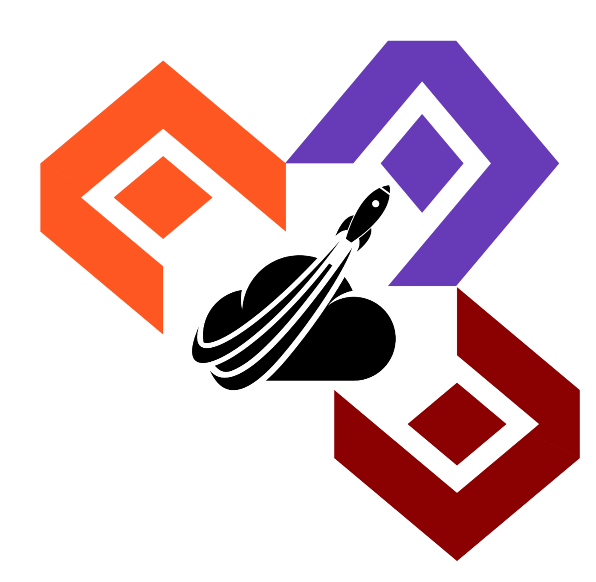
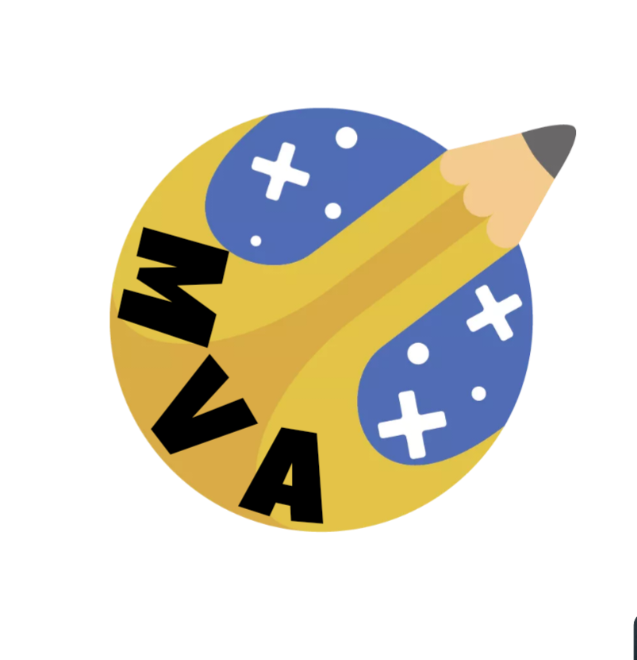

| Sídlo: | Výzkumné Středisko - In Alia Manu. |
|---|
| Počet členů: | 2 |
|---|
| Druh: | Vesmírná organizace |
|---|---|
| Vznik: | 1. Listopadu 2022[N] |
| Generální Ředitel: | Matakady |
MVA neboli Matakadyho Vesmírná Agentura byla společnost existujíc během Třetí Sezóny FlaMaCraftu. Byla jediná svého druhu a tudíž vědecky nejvyspělejší na celém serveru. Sídlila v In Alia Manu a v čele byl Matakady. A dne 31. Prosince 2022 zorganizovala a úspěšně provedla první odlet na Měsíc. Jejímy členy byly:
MVA při vzniku měla 4 návrhy log, na kterých se někdy okolo 11. Listopadu 2022 hlasovalo. Hlasování se mohl účastnit kdokoli (i členové jiných zemí) a vyhrál ho návrh číslo 1.


Všechny tyto loga byly vytvořeny za pomocí aplikace, jejíž název byl zapomenut. Tudiž pravděpodobně nemají symboliku.
Plány na raketu začali vznikat už den po založení a podle slov zakladatele:
"Máme tady spoustu takovýhle blueprintů, který... jsou takový nesmyslný. A to je na tom takový to krásný. Máme tady nějaký blbosti, kdo chce může si to samozřejmě přečíst"
A podle toho co za možnosti v Minecraftu jsou, je asi jasné že na AVGAS ta raketa neletěla. Byla to standartní redstonová raketa až na to že větší.
Dne 31. Prosince 2022, hned po konci tréninku nového kosmonauta Trixxa se připravovalo na let do vesmíru. Poprvé byla představěna maketa rakety na zeleném plátnu jakožto vtip, a poté byla odhalena samotná raketa. Po ohnostroji oba kosmonauti nasedli na palubu a odlet začal. Let se projevil jako úspěšný a raketa dorazila na svojí destinaci. Na měsíci bylo postaveno útočistě, a bez újmy se kosmonauti vrátili na zem. Celá mise byla veliký úspěch a doposud se čeká na nějaký další takový pokus